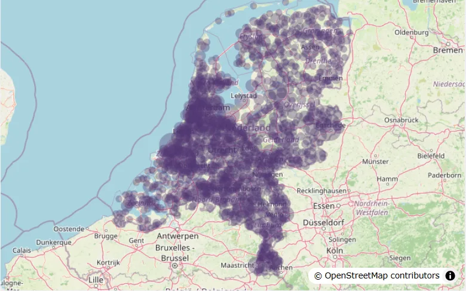
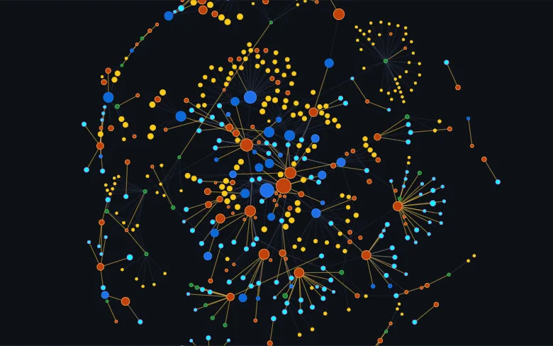

Textile Ecosystem Living Lab
The TELL provides a multi-perspective representation of the Textile, Clothing, Leather, and Footwear sector, from the geographical and semantic (or thematic) to the relational networks through which knowledge is shared. To facilitate collaboration and innovation, you can navigate across different fields of expertise (keywords) and find research institutions and businesses that are advancing knowledge across the sector.

Business specialization
Textile activity spreads across the Netherlands in a variety of business specializations. We aim to provide one of the most thorough representations of the sector by collecting keywords from public websites and facilitating business localization through search engines and filtering.
Open the map →
Research network
The research and business innovation network tends to cluster around organizations with extensive experience in specific research themes. By retrieving research project data (i.e NWO, Erasmus+, Horizon Europe and Horizon 2020), we display the network of collaboration across the Netherlands and the EU.
Open the network →